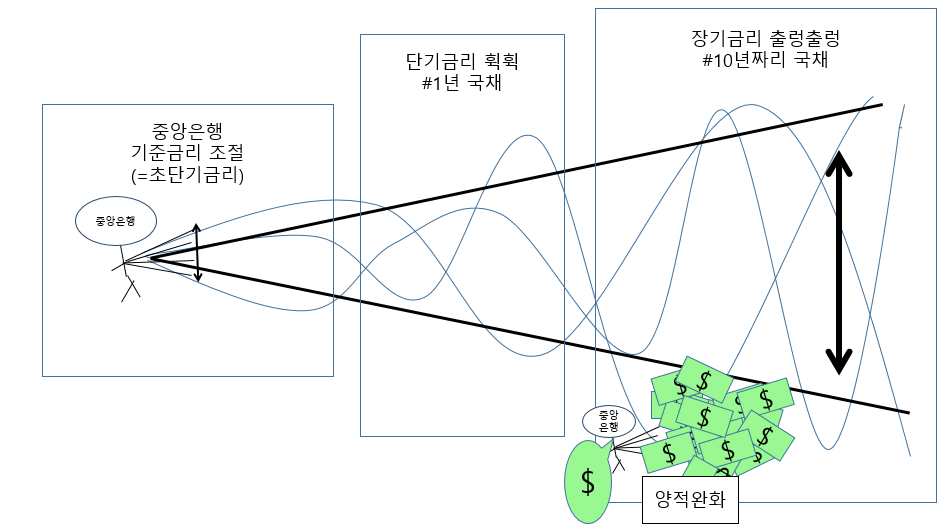

정리 안 된 내용들
금융경제(금리, 환율) vs 실물경제(성장)
한 국가가 금리 내려도 그 국가에서 성장이 강하게 나오면 그 국가에서 외국인 투자금이 안 빠져나감. 근데 성장이 미미하면 금리 내려서 타국과의 금리차가 벌어지면 외국인 다 도망감. 환율 올라서 이 과정을 가속시킴 현재 중국이 이런 딜레마에 빠져있고 우리나라 1996에 성장 미미했음(무역적자). 거기에 환율 오르니까 다 빠져나감. 시장(개인, 기업)
금융기관
정부
시장(개인, 기업)
금융기관
정부
화폐가치 하락을 만드는 힘
1. 다른 나라의 금리가 올라갈 때, 자국의 금리 내릴 때 2. 자국 통화량이 늘어날 때 3.국가가 성장하는 방법
1. 내수 : 소비 부양, 투자유치 2. 수출선진국 vs 개도국
선진국 위기형태
보통 선진국에선 기업들이 고정금리로 돈을 빌린다. 근데 그 상황에서 debt deflation이 일어나면 갚아야할 부채는 명목적으로는 고정적이지만, 실제 부채는 올라가는 것임. 내가 $90을 고정금리로 빌린 상황에서 주가, 물가가 10% 빠지면 물가는 떨어지고 화폐가치는 올라서 실제론 $99을 내야하는 상황임.
ex. 대공황
달러 강세 = 개도국의 부채 증가
달러가 약세일 때 사람들은 달러로 대출받으려고함. $1 = ￦1000 일때, $1 빌려서 한국에 ￦1000 투자한 상황에서, 달러가 더 약세로 가서 $1 = ￦500 되면 투자한 ￦1000 중 ￦500만 빼서 모든 빚을 갚는게 가능. 개꿀ㅎㅎ 심지어 미국금리가 낮으니 이자도 조금내는데, 심지어 이자가 환율 때문에 더 작아짐. 근데 이 상황에서 달러가 강세로 돌아버리면 ㅈ됨. 달러 강세로 $1 = ￦2000 되면 ￦2000을 다 줘야만 달러 빚 갚을 수 있음. 게다가 금리도 오르니 이자도 많아지고, 이자가 환율로 한 번 더 커짐ㅠㅠ ex. 2008양적완화(달러 약세) -> 2013태이퍼링(달러 강세) 다만, 달러 강세면, 개도국 통화 약세로 가니 수출로는 숨통이 트임. 근데 여기서 일본, 유럽이 양적완화로 수출 수요를 챙겨가면 개도국 박살남. 그래서 2014 달러강세, 엔·유로약세 조합으로 개도국들이 골로감. 유일한 희망이 중국몽임. 그나마 이 때 위안화가 달러 대비 강세를 보여줌. 그래서 개도국이 중국에는 수출할 수 있음. 위안화>달러>엔, 유로, 개도국내수 vs 수출
내수 : 사는 것 수출 : 파는 것금리
금리가 내려가면 외국인 투자자가 도망(자본유출)갈 수 있다. 외국인이 도망가면 주가 폭락하고, 채권가격 폭락(채권금리 급등), 환율 급등(수입물가 오름) 외국인이 도망가면서 국채(채권, 시장)금리 뛰고, 수입물가로 비용infl 심하게 오면 이게 하이퍼 인플레이션임. 금리 낮춘게 오히려 시장금리 들어올려서 경기위축시킬 수도 있음. 금리 너무 내리면 유동성 함정에 빠질 수도 있음. 은행의 수익성이 확 낮아져서 대출을 잘 안 해주려고함. 도이체 방크는 지금이 2008금융위기 때보다도 주가가 더 낮다. 은행은 단기로 조달해서 장기로 운용하는데 장단기 금리차 역전되면 은행의 예대마진이 줄어듬. 심장이 약해지는 것임. 그러고 1년이 지나면 손끝부터 시리기 시작함. 장단기 금리차가 역전되고 1년이 지나면 어김없이 불황이 찾아오더라.금리(fed의 기준금리 #대출 이자율 = 자금 조달 비용) vs 성장(#실물경제 #투자 수익률 #무역전쟁, 환율전쟁 = 수요 위축 = 성장 방해)
성장이 세게 나오면 금리 높아도 투자하는 게 나아서 돈이 몰림. 반대로 성장이 확 주저앉으면, 금리가 아무리 낮아도 답이 없음. 금리를 내린다고 무조건 경기가 부양되는 것은 아님. 무역전쟁으로 미국이 수요를 줄여버리면서 수출할 구멍이 작아졌는데, 그 구멍을 통해 너도나도 수출을 해야하니 환율전쟁이 나타날 수 밖에..공산주의가 자회주의로 변할 때의 시행착오 + #하이퍼 인플레이션
정부가 국영기업에게 돈을 줄 땐 그냥 주는 것임. 그냥 재정지원임. 근데 자본주의로 바뀌면 대출해주는 개념으로 돈을 빌려줌. 국영기업 : 여지껏 그냥 돈 주다가 뭔 소리야? 대출 그게 뭔데? 먹는 거임? 정부가 국영기업한테 돈을 받아내질 못함. 정부가 부실화됨 체제 전환시에 개도국들이 국영기업에 대출해줬다가 물리는 경우가 많음. 개도국이 부채 메워주려고 돈을 겁나찍고 하이퍼인플레 급행열차탐. ex.베트남, 브라질 하이퍼인플레 급행열차탐. 개도국이 함부로 돈 찍어내긴 힘듦.
중국도 마찬가지임.
개도국이 함부로 돈 찍어내긴 힘듦.
중국도 마찬가지임.
간접금융 vs 직접금융
간접금융은 은행에 돈이 다 모으고, 신용평가에서 뿜빠이 해주는 것임. 위험이 은행에 몰림 직접금융은 시장에서 플레이어들끼리 치고 박는 것임. 나한테 대출해줄 사람? 얼만데? 위험이 분산됨.외환위기 vs 재정위기 vs 금융위기 vs 대공황
원인(위기의 시발점)이 어디냐에 따라 달라짐.외환위기
: 외환이 부족해서 배째라 등따라 #개도국 달러 부족 #미국에서는 외환위기가 올 수 없음. 위기가 오면 달러를 찍으면 됨. #IMF가 달러 주입시켜주면 문제 해결재정위기
: 정부가 배째라 등따라금융위기 #금융경제 누워버림
: 금융기관이 부채많아서 배째라 등따라. 심장(금융경제)에 병이 생긴 것. 장기(실물경제)는 살아있는데 심장만 죽어서 장기가 기능도 죽어버리는 것. walls street가 main street를 뒤집어 엎어버린 것. 금융위기 해결책 : 금융위기를 해결하려면 심장의 기능을 살려줄 필요가 있음. 이것만 잘 하면 V턴 가능. 금융기관에 돈을 넣어주면 됨. 잘 하면 급격하게 살아날 수 있음. 양적완화로 피를 수혈해주는 것임. 일본은 이것을 못하고 피부병만 고쳐서, 돈을 엄한데 써서 20년 누움. 금융위기는 비교적 관리가 쉽고 해결이 가능함. 은행을 잘 관리해주고 국가간 금융안전망(국가간 통화스와프)을 만들면됨 금융 쪽에서 대비가 가능함. 브렉시트 때, 각 금융기관이 장소 시간 다 알고 있으니, 총 겨누고 있다가 곰이 나오자마자 바로 쏴버림. 그리고 V턴 나옴.대공황 #실물경제 누워버림
: 공급>수요; 원인 : 공급과잉; 공장들이 대출받아 설비투자 늘림. 처음에 수요는 좋다가 사람들이 어느정도 챙기면 수요는 꺽이는데 공급은 계속 늘어남. 대공황이 터지니까 산업보호를 위해 관세장벽을 올림. 다른 나라들도 다 관세장벽을 올림. 무역전쟁으로 분절화. 서로 교역으로 최대의 수요를 만들어야 하는데 무역장벽이 세상을 나누니까 자동차 잘 만드는 나라가 옷도 만들려고 하나가 퀄리티는 떨어지고, 가격만 높은 가성비 최악의 옷을 만들어 수요가 죽음. 무역전쟁으로 수요가 위축됨. 미국의 대공황 -무역전쟁으로 전 세계 수요 위축-> 전세계의 대공황 실물경기의 과잉공급이 만들어낸 최악의 사태. main street가 wall street를 뒤집어 엎은 것. 실물경기가 주저앉으면서 기업이 빚을 못 갚으니 은행을 하나하나 무너짐. 해결책 : 공급은 줄이고 수요는 늘리는 것. 2차 세계대전은 공급을 부숴버리는 것. 과잉공급을 전쟁으로 해결함. 폭탄으로 공장부숴버림. 수요 늘이기 : 1.소득 증가 2.미래의 소득 땡겨오기(빚으로) 3.새로운 시장이 열림 대공황은 대비와 해결이 힘듦. 수요에 대한 국제적 공조가 필요함.금융위기 vs 대공황 사례
ex.국제유가 1985~86 : 대공황 : 유가 빠지고 유가가 2003(2차 걸프전) 때 돌아옴. : 90년대 유가 계속 바닥 기니까 소련이 무너지고, 1998.08.에는 러시아가 모라토리엄 선언 2014.07.($105->$26) : 대공황 : 수요는 그대로 인데, 셰일오일이 들어와서 사우디, 러시아가 미국 물리치려고 공급과잉 됨. 그래서 유가가 주저앉음. 2008($150->$33) : 금융위기 : 유가가 하늘에 떠있는데, 심장에서 혈액이 안 나와서 시장에서 수요가 갑자기 싹 살아진 것 : 양적완화로 심장만 살려주니 바로 V턴이 나옴주식 vs 채권 vs 부동산
방식의 차이은행의 대장 : 중앙은행
1. 중앙은행의 목표 : 통화가치 유지
중앙은행은 안정적으로 조금씩 물가가 오르는 것을 목표로 한다. 그 이유는 심리적인 요인이 있다. 사람들은 물가가 3%오르는데 임금이 2%오르는 것(돈의 구매력 1%하락: 물건을 100개 사다가 99개 살 수 있게 되는 것)을 물가가 3% 떨어지는데 임금이 2%(돈의 구매력 1%상승 : 물건을 100개 사다가 101개 사는 것이 가능해짐)떨어지는 것보다 좋아하기 때문이다. 이는 무엇인가 양으로 커지는 이미지를 본능적으로 선호하기 때문이다.2. #중앙은행의 역할 기준금리 -> 단기국채 vs 장기국채 #장단기금리 역전현상
중앙은행은 정부와 금융기관의 사이에 있다.중앙은행의 통화량 조절 방법 : 공개시장조작(open market operation) #기준금리를 이용해 시중금리를 조절하는 구체적 방법
중앙은행은 기준금리(=초단기 금리)를 조절하면서 장기금리까지 조절하는 것임.  경기가 안 좋으면 단기국채,장기국채 가격이 떨어져서 단기국채금리, 장기국채금리가 쭉 올라감. 돈의 가격이 올라가는 것임. 이러면 중앙은행이 기준금리를 내림. 기준금리 = 초단기금리 기준금리 인하하면 단기국채에 영향. 은행은 단기로 자금을 조달해서 장기로 대출을 해줌. 단기로 물건을 빼와서 장기로 파는 느낌. 은행은 장단기 금리차를 먹음. 그럼 중앙은행이 기준금리를 내리면, 단기금리는 쭉 내려가서 장단기 금리차가 벌어져서 은행의 마진이 늘어남. 은행의 마진이 커지니까 대출을 펑펑해주기 시작함. 그래서 기준금리를 인하하는 것임. 근데 2008금융위기 때 중앙은행이 기준금리를 엄청나게 잡아 내렸는데도, 대출이 안 나감. 은행이 기절해서 파산할 위기니까 마진이 커지는 것은 중요하지가 않음. 생명이 위험하니 마진이 난다고 대출을 해주는 건 의미 없음. 중앙은행이 안 되겠다 해서 장기국채를 직접 사버림. 이게 양적완화임. 그러면 장기국채 가격오르고 장기국채금리는 내려옴. 장기국채금리가 부동산금리와 연동되니 부동산을 살릴 수 있음. 공격수가 다 죽어있으니, 골키퍼가 날뛰어서 골도 넣고 그러는 것임.